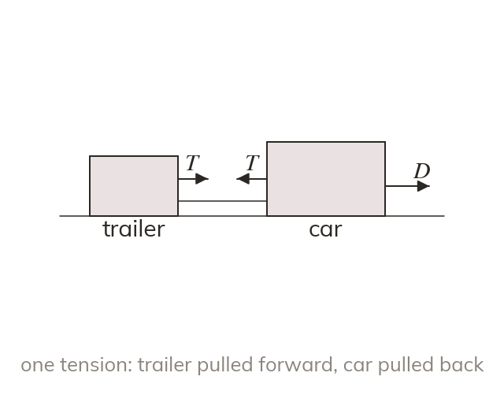
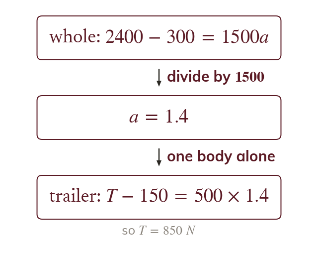
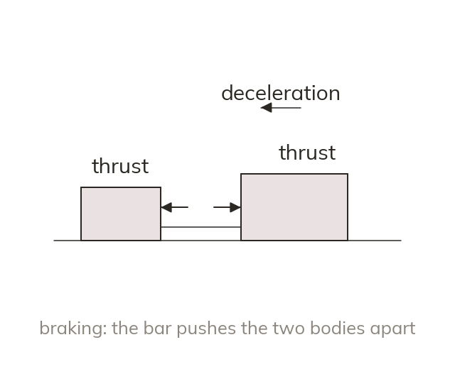
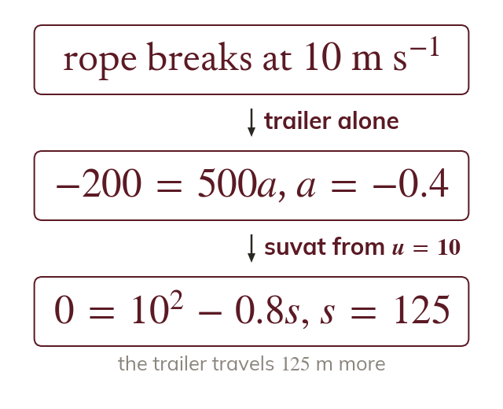

Connected bodies share an acceleration
Two bodies joined by a light inextensible rope, or a rod, move together with the same acceleration. The tension pulls each body towards the other.
A car towing a trailer, a train pulling its carriages: two bodies joined together move as one, and used twice finds both the acceleration and the force in the connection. Next lesson the same idea finds the forces between stacked boxes and inside a lift.
Work down the page at your own pace. Write every answer in your book first, then click to check it.
Read each card, then follow the worked examples one step at a time.

Two bodies joined by a light inextensible rope, or a rod, move together with the same acceleration. The tension pulls each body towards the other.

Treating the system as one body finds the acceleration, because the tension is internal and cancels. on one body alone then finds the tension.
Pick an answer. If it's wrong, the feedback tells you which mistake it was.
Read each card, then follow the worked examples one step at a time.

A tow bar or rod can push as well as pull. When the system slows down, the bar is in thrust: it pushes the trailer back and the car forward.

When a tow rope breaks, each body moves on under its own forces only. Its speed at that moment is the initial speed for the next stage.
Pick an answer. If it's wrong, the feedback tells you which mistake it was.
Finished? Next lesson: M10.5b Stacked Particles and Lifts.
For each skill, tap the one that is true for you today. Your Revise pages start with anything you mark Not yet.
Your ratings are saved on this device only.
Log in, then search for a code to practise that skill.